1. Introduction
This document is to serve as a guide for any individual that wishes to make use of this application.
I will go over every functionality provided, moving from one accessible page to another in order to best describe what each of them is destined for.
I will also briefly touch upon the materials (i.e, the documentation) that may be of help for future developers, in case any further development of this application is to take place in the future.
2. Provided Services
Without further ado - I will iteratively go over each page of the Web App and explain what is of interest to the user there.
If there are certain sections that may be of more immediate interest to you, I suggest you utilize the navigation links at the beginning of this document.
2.1. Home Page
In the current version of the application, there is nothing here that may be of tangible use to the user. This page consists of a slideshow that goes over three key features that this application provides.
Namely, personal data protection, convenient access to knowledge regarding the latest security threats, as well as a guide to engineering "hackproof" systems.
REMARK: The last one of these functionalities is, unfortunately, not complete in the actual app version.
2.2. About Page
Pretty self-explanatory. This page by itself contains a shorter description of the application's services.
2.3. Contact Page
This page contains the contact information of the developers of this appliation.
2.3. Security Page
This page provides two main functionalities:
-
One functionality that allows the search of information w.r.t cybersecurity.
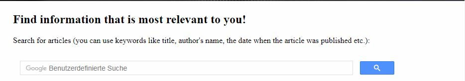
The search bar
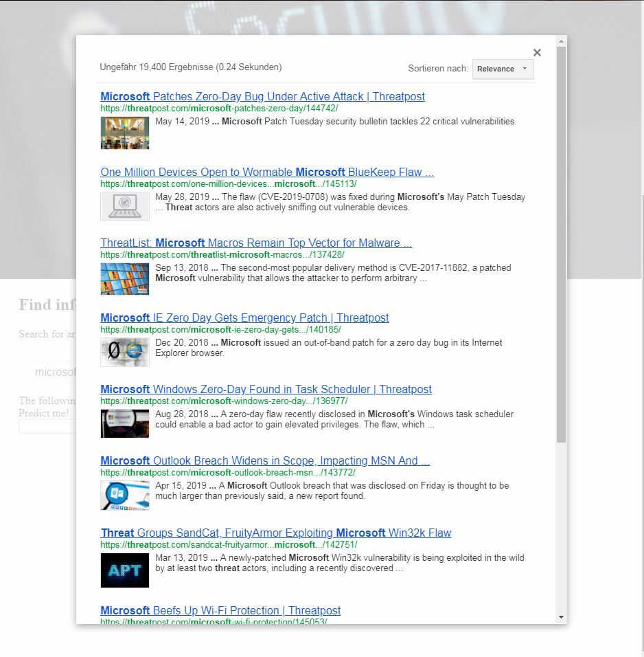Preview of search for 'microsoft threat'
-
A second functionality that allows a Smart (predictive) Search utilizing a Neural Network engineered in the application's Oracle Database.
This functionality is however only a preview, as time has not allowed this service to be fully implemented. 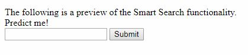Smart Search
There may be errors when trying to search for a keyword that does not exist in our Neural Network's dictionary - as we have not trained it sufficiently (this would namely take a couple of days and an immense amount of training data).
2.4. Software Vulnerabilities
Here one may search for software vulnerabilities w.r.t a particular software-producing company (such as microsoft), or a specific type of software - however any keyword may be used for the search.
The user may also click 'Get References' in order to get further details w.r.t a particular exploit.
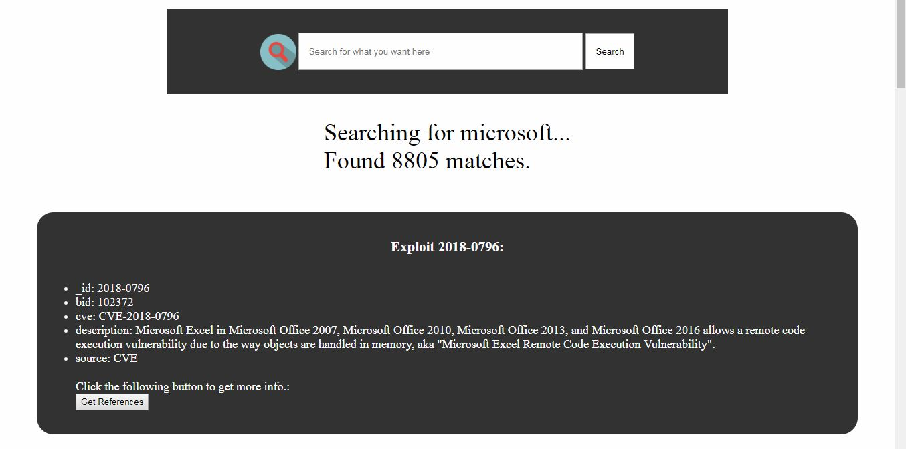
A search for vulnerabilities w.r.t the keyword 'microsoft'
2.5. "Hackproof" Programming
This page was originally meant to provide an in-depth guide w.r.t techniques whose purpose is to aid developers in engineering "hackproof" application/systems.
Due to a lack of time, this guide is not complete.
2.6. Security Tools
Here, we offer two services. Namely...
-
Safe Browsing
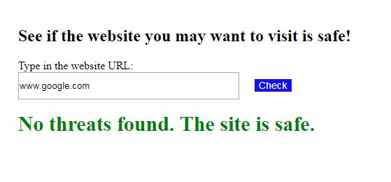Checking whether www.google.com is deemed to be safe...
-
HaveIBeenPwned?
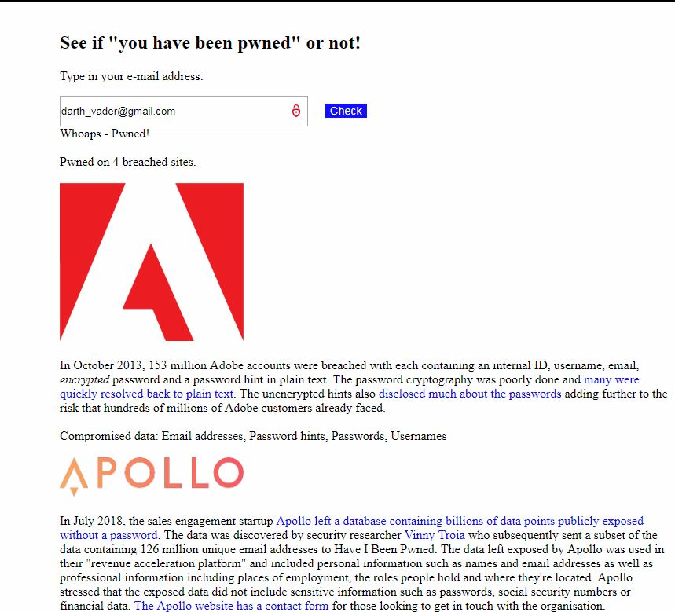Looks like Darth Vader may have some extra matters to worry about other than destroying the Jedi...
2.7. API Guide
This service here is aimed towards other developers that may want to use our application's functionalities inside their own systems.
For the time being, our API provides responses to HTTP GET requests that request information w.r.t software exploits.
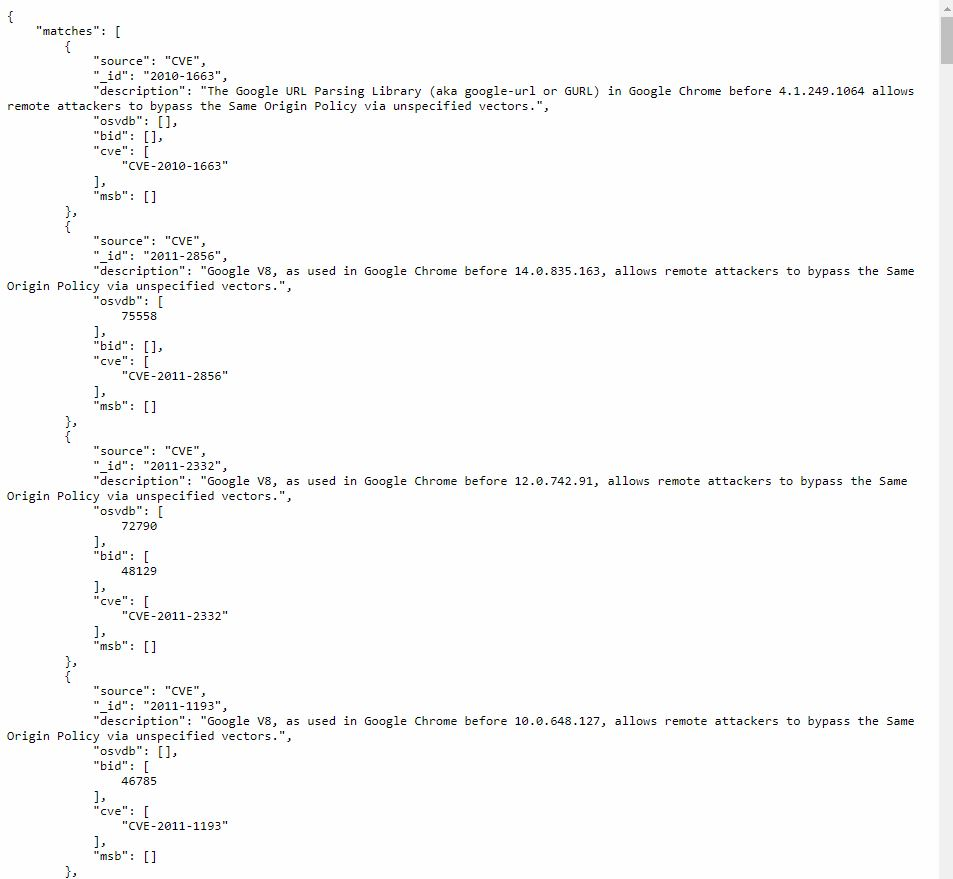
Response to GET api/v1.php/exploits?description=google
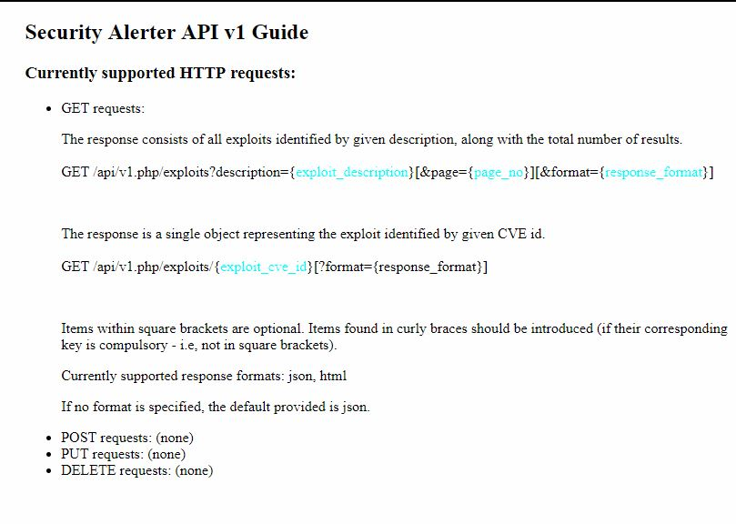API Guide, also found in our application
Currently supported response formats include JSON and HTML.2.8. App Doc
This section here is also suited for developers. Namely, for developers that may wish to continue the development of this application.
Here, you can find information w.r.t most of the app's architecture - including classes, methods, their code and their explanation.
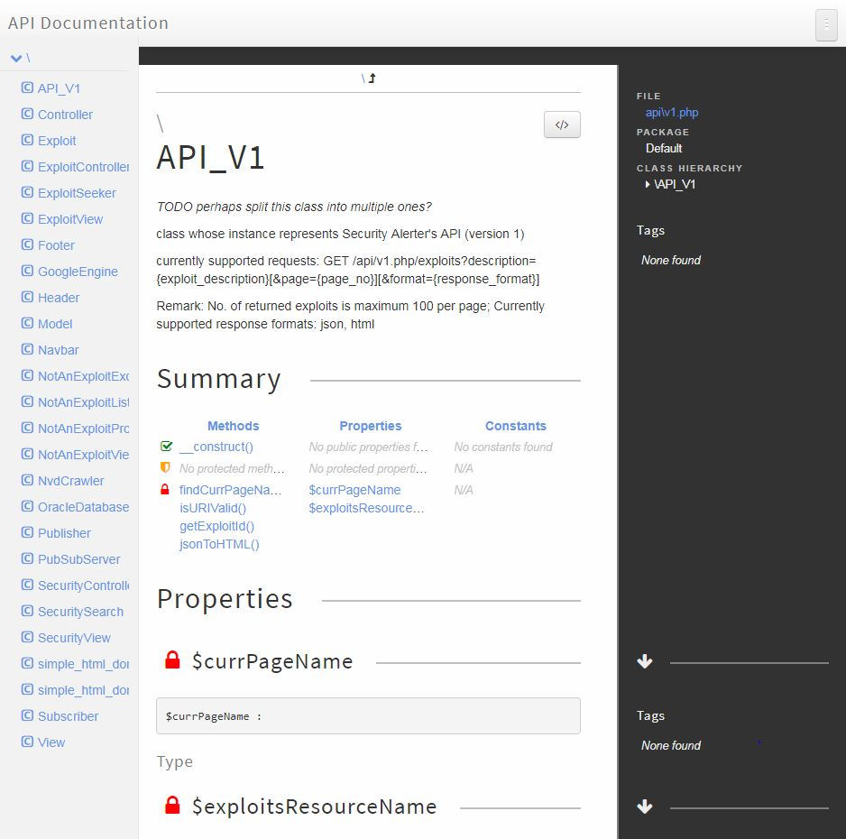
Documentation w.r.t the 'API_V1' PHP class
2.9.1. Login
Self-explanatory title. After you've proceeded to create an account, you may log in into the application.
There is one particular benefit to doing so - namely the fact that you will receive real-time notifications w.r.t new exploits that appear. You will see the pop-up in the application when that transpires.
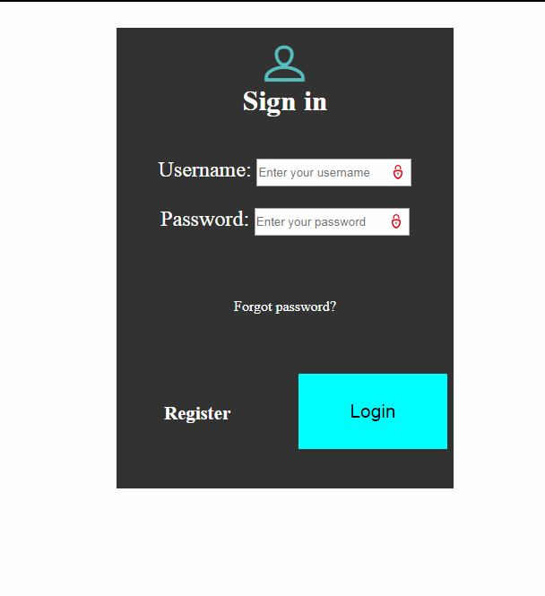
Login
2.9.2 Create Account
Lastly, one may here create an account if one is not already at one's disposal.
Once again - the benefit of becoming a user of our application is the fact that the user may receive notifications w.r.t new software vulnerabilities that appear.
Furthermore, the user may also choose what types of vulnerabilities he/she chooses to follow.
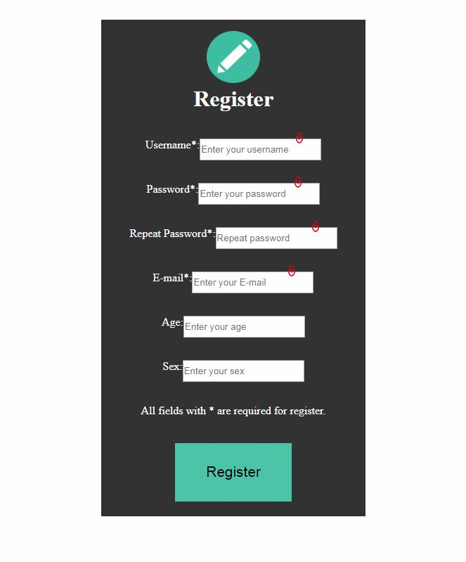
Create Account
Preview Video
Here is a short video that serves as a preview of most of the application's functionalities.
Conclusion
This has been a relatively brief guide regarding the usage of the Security Alerter application, engineered as requested by the "Alexandru Ioan Cuza" University of Iasi, Faculty of Computer Science.
For more information w.r.t to this application, don't hesitate to contact the development team.
Here are the contact details:
paul.reftu@outlook.de, +40747026299 - Reftu Paul Alexandru
ruse.daniel.stefan@gmail.com, +40756479764 - Ruse Daniel Stefan
flavius_petru@yahoo.com, +40731266778 - Popescu Flavius Petru